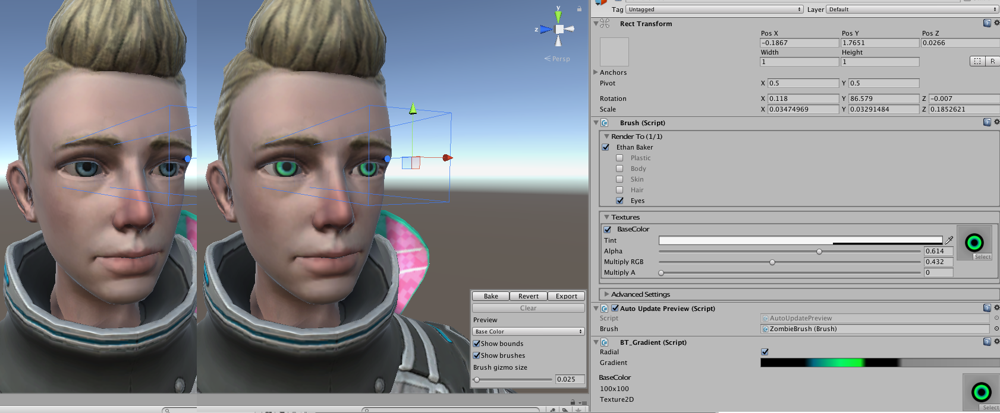
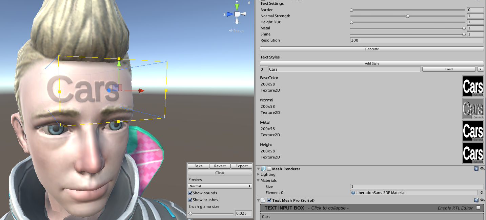

Brush Textures
There are a number of way to get textures for the brush, including using Procedural Materials and TextMesh Pro text.
Brush API
// If a brush has multiple styles, these methods will cycle through them.
brush.NextStyle();
brush.PreviousStyle();
// If there is a style with this name it will be set.
brush.SetStyle(styleName);
BT_Default
Explained in getting started. Just click Add Texture and drop in your textures. Make sure they are marked for the appropriate usage.
BT_Gradient
Creates gradient textures. Very simple but it has a lot of uses, for instance, quickly generating textures. Or fake shadows. 
var g = GetComponent<BT_Gradient>();
// Set the gradient.
g.SetGradient(gradient, radial);
BT_ProcMat
Designed for Procedural Materials which I wrap in ProcMat.
The brush will use the textures directly from the ProceduralMaterial, unless you choose to store them.
Click RenderTexture to create copies of the procedural textures. Now you can have 2 brushes sharing the same ProceduralMaterial but still using different textures.
Click Texture2D to create copies as texture2D. This is better when you are working in editor since Unity will wipe RenderTextures if you do things like save your scene or resize the inspector editor.
During runtime it's probably better to store as RenderTexture since it's faster to copy to.
var pm = GetComponent<BT_ProcMat>();
// List all property names.
foreach(var name in pm.procMat.names)
Debug.Log(name);
// You can modify procMat properties like:
pm["$randomseed"].asFloat = Random.value * 100f;
// ProceduralMaterial seed and output size have easy access variables.
pm.procMat.seed = Random.value * 100f;
pm.procMat.size = PowersOf2.p256;
// To rebuild asynchonously:
pm.procMat.RebuildTextures();
// Or instantly.
pm.procMat.RebuildTextures(true);
BT_Share
This just uses the textures from another brush. So it saves on texture memory but you can still customize it with the regular brush options, like tint, alpha, offset.
BT_TextureSet
This takes one or more TextureSets.
BT_Text (Requires TextMesh Pro)
Lets you create brushes from text. Use it to generate sports jersey names at runtime, or license plate numbers, or use dingbat fonts for easy tattoos, splats, signs. It's really fun to play around with. TMPros filter effects like glow & bevel work great too. 
TextMesh Pro is free now, and Unity will be officially supporting it soon.
Setup
- Install TextMesh Pro.
- Go to Editor > Project Settings > Player and in Script Define Symbols add TEXTMESHPRO.
- Create a brush and add the BT_Text component and a TextMesh Pro component.
- Enter some text.
- Set the resolution (the width of the texture) higher = better quality = more memory.
- Hit Generate.
API
var t = GetComponent<BT_Text>();
// To set text.
t.SetText("your text");